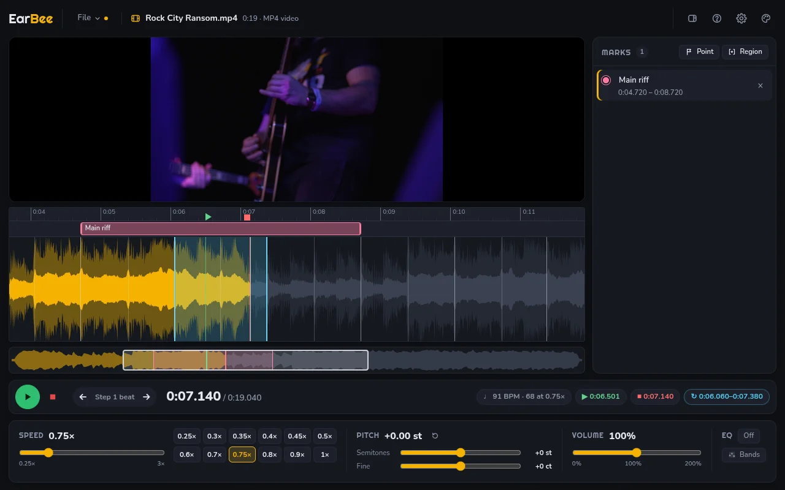

Windows
Portable .exe: nothing to install
If Windows warns you, choose More info, then Run anyway.
A player for transcribing music
Slow a song down without changing its pitch. Loop the hard part. Step through it from the keyboard.
EarBee is a desktop app for Windows, macOS and Linux. Open this page on a computer to download it. See the downloads
Windows, macOS and Linux
Every feature on this page is in the download. Nothing is locked.

EarBee finds the beats and bars for you, so you can loop one bar at a time.
Press B. A line marks every beat, a stronger line the start of every bar, and you see the tempo.
On Intel Macs: beats only, no bars.
Press \ to loop the bar you're in.
.ebee file, with or without the song.Listen, stop, go back, listen again: each step is one key. Press ? in the app for the full list.
EarBee's own dark and light themes, plus popular editor themes. Automatic follows your system.
For Windows, macOS and Linux. Free and open source.
Portable .exe: nothing to install
If Windows warns you, choose More info, then Run anyway.
Disk image, .dmg, for Apple Silicon or Intel
Drag it to Applications. The first time, right-click it and choose Open (it isn't signed by Apple). Not yet tested on a real Mac: tell us how it went.
.AppImage, any distribution
Make it executable, then run it: chmod +x EarBee*.AppImage
All releases ·
Source code, or build it yourself:
npm install && npm start